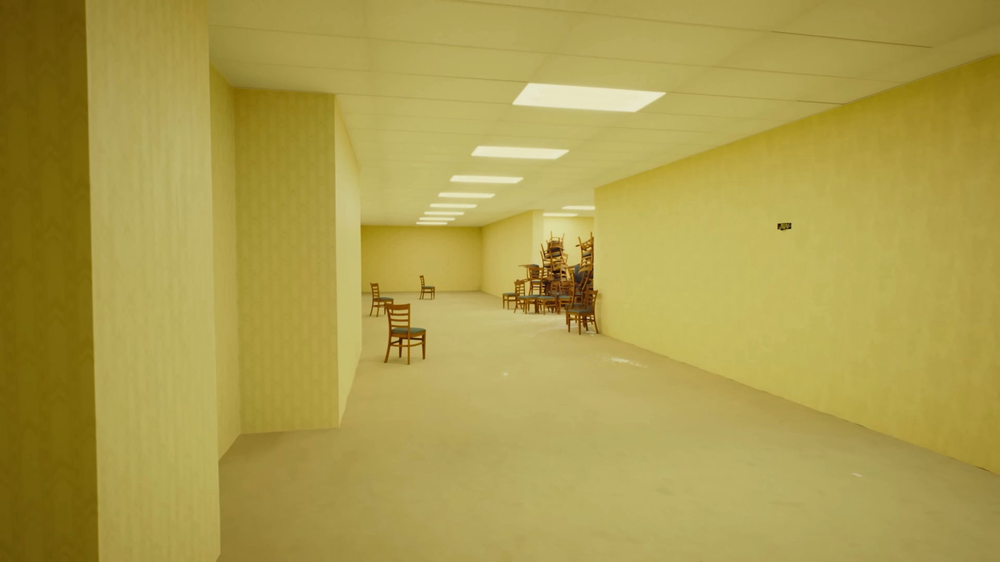
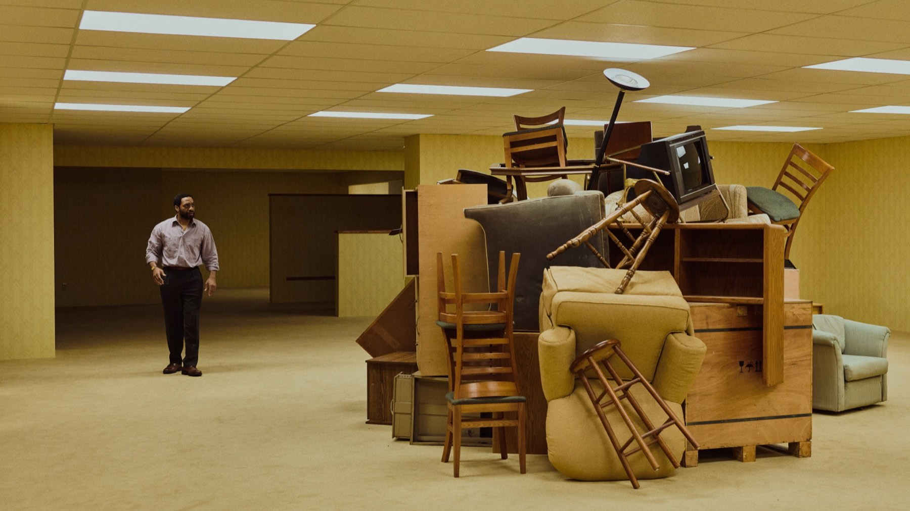
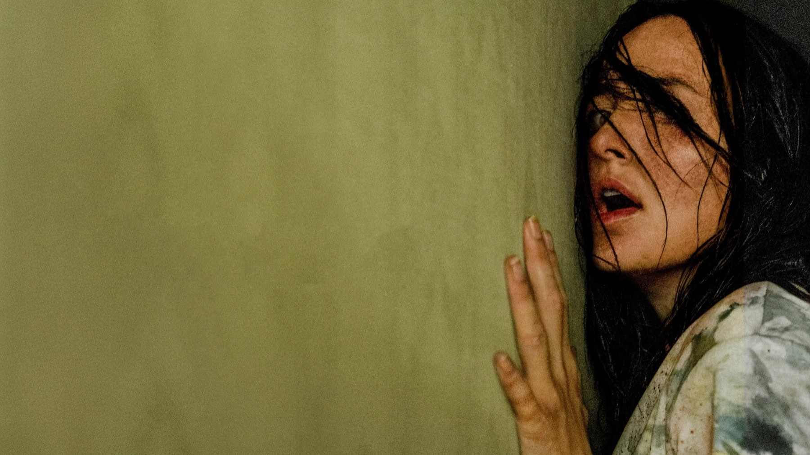

Backrooms: la recensione del film di Kane Parsons
Un ventenne, un video su YouTube e dieci milioni di budget: A24 porta in sala un incubo di internet. La prima mezz'ora è tra le cose più inquietanti dell'anno, ma il film si accorge troppo presto di dover raccontare una storia
Backrooms fa paura quando guarda il vuoto e si indebolisce quando smette di guardarlo e comincia a spiegarlo. È un ottimo horror di ambienti, ma un horror di trama appena sufficiente: se amate le storie in cui conta dove siete più di chi vi insegue, vale il biglietto, mentre chi vuole un mostro che dia un senso al labirinto uscirà con qualche dubbio.
Da un video su internet al cinema
Nel 2022 un ragazzo pubblicò su YouTube un video in cui bastava un corridoio giallo, ripreso male, per far venire voglia di spegnere tutto. Parsons aveva iniziato la sua serie il 7 gennaio 2022, partendo da una leggenda di internet: esistono stanze deserte senza fine in cui si può finire per sbaglio. A24 ha creduto in quella paura povera e l'ha portata in sala, anche se Parsons non aveva mai diretto un lungometraggio, perciò la scommessa era tutta sul suo sguardo. Il film parte da una domanda: un corridoio può fare paura per più di cento minuti, quando finora ci è riuscito per cinque?
Di che cosa parla Backrooms
Clark, il personaggio di Chiwetel Ejiofor, ha un negozio di mobili e un matrimonio che si sta sfaldando. Beve troppo e vede una terapeuta, Mary, a cui Renate Reinsve dà una compostezza tesa: anche lei porta addosso una casa d'infanzia demolita e una madre che non usciva più di casa. Intanto in negozio girano uno spot con Clark vestito da pirata, le luci sfarfallano e un televisore funziona a scatti. Fin qui nessuna anticipazione che il film non faccia nella prima mezz'ora; più avanti, nella sezione sul difetto, parliamo anche del secondo atto.
Bisogna aver visto i video di Parsons? No, perché la premessa si regge da sola e chi arriva senza conoscerli non ha immagini già pronte in testa. Chi li conosce ritroverà il tono di quei corridoi, ma con una differenza che si vede subito: qui lo spazio è fisico e costruito, mentre prima era un'immagine sgranata da schermo di telefono.
La scena che vale il film: la fenditura nel muro
Il passaggio che regge tutto è il primo. Clark va a controllare il quadro elettrico e vede nel muro una fenditura luminosa: si avvicina, come farebbe chiunque abbia un negozio da tenere aperto, e cade dall'altra parte. Non c'è nessun portale solenne, perché la soglia è un difetto dell'intonaco, ed è proprio questo a funzionare: tutti abbiamo guardato una crepa in un muro, nessuno ha mai guardato una porta magica. Il seminterrato diventa di colpo un posto che gli somiglia ma sbaglia di poco, e l'orrore sta in uno spazio che ha perso la sua funzione, non in un mostro. Marzia Gandolfi, su MYmovies, legge il film come una riflessione sulla presenza dell'assenza.

Nella stessa sequenza arriva il colpo migliore del film. Clark trova per terra gli oggetti di un uomo, Naren Wane, finito lì prima di lui, e capisce di non essere il primo. Qualcosa lo insegue ma non si vede mai: lui scappa e riemerge nel negozio. Il film non ha ancora spiegato niente, ma fa più paura di qualunque inseguimento, perché il fuori campo lavora al posto del mostro.
Ciò che cambia il modo di guardare quel passaggio è come è stato fatto. Il film non si è affidato alla computer grafica: lo scenografo Danny Vermette ha costruito circa 2.800 metri quadrati (30.000 piedi quadrati, titolo anche di un podcast di A24 con Parsons) di set su quattro teatri di posa a Vancouver, partendo dai modelli digitali che Parsons aveva disegnato in Blender. Le stanze si sentono materiali perché lo sono, con la carta da parati e la moquette comprate in Canada a migliaia di metri quadrati, e il disagio nasce da come sono costruiti gli ambienti più che da ciò che accade dentro.
Il secondo punto forte è l'aspetto da vecchia videocassetta. Tara Brady, sull'Irish Times, descrive uno spazio di mobili ammassati in cui i corridoi portano solo ad altri corridoi, copie di copie, e nota che il film in parte si traveste da found footage degli anni Novanta. Le cassette di auto-aiuto della terapia vanno nella stessa direzione, perché la paura passa da supporti consumati. Ejiofor interpreta un uomo diviso tra smarrimento e privilegio maschile senza chiederci simpatia, mentre Reinsve lascia intravedere le ferite sotto la calma, e due attori così sanno reggere un film in cui i personaggi restano spesso soli davanti a un muro.
Dove si indebolisce: quando arriva la spiegazione (attenzione, anticipazioni)
Il limite sta nel passaggio dal video al lungometraggio, che tende a razionalizzare la natura astratta della fonte. Un video di pochi minuti poteva ignorare personaggi e motivazioni, ma un film no, perché quasi due ore di corridoi senza nessuno dentro non reggono. Allora, per convincere Mary, Clark porta nel labirinto Kat e Bobby, i due dipendenti del negozio, e il film cambia regola. Nel corridoio in forte pendenza Bobby viene trascinato via, una telecamera è raccolta da qualcosa che non vediamo, Kat urla dietro un muro che non si apre. La sequenza è efficace, ma i personaggi non si perdono più in uno spazio: vengono cacciati da una presenza. Quella pendenza è coerente con una scelta dichiarata da Vermette, che ha dato verticalità ai set per rendere più faticoso il movimento degli attori; in quel punto la fatica si vede, e per un momento il labirinto torna a essere un luogo.
Poi c'è Phil, uno scienziato dell'azienda Async, che osserva tutto dai monitor di sorveglianza: un occhio che organizza l'enigma, e ogni occhio che organizza toglie respiro a un luogo che spaventava perché nessuno lo governava. È lo schema di mille storie di laboratori segreti, e a ricordarcelo basta Severance, che con un ufficio e un'azienda dietro ai corridoi ha già detto quasi tutto sull'argomento. Un corridoio giallo infinito invece non somiglia a nient'altro, perciò il film sembra ridursi proprio quando offre un colpevole.
Come l'hanno accolto
I numeri servono a capire la forbice. A novembre 2026 Rotten Tomatoes conta l'86% di recensioni positive su 319 e Metacritic assegna 76 su 100, mentre il pubblico americano è stato più freddo, con un CinemaScore B- e il 68% di giudizi positivi nei sondaggi PostTrak. Il budget era di circa dieci milioni di dollari e l'incasso mondiale al 20 settembre 2026 di circa 402,5 milioni, perciò Backrooms è il film di maggior incasso della storia di A24; Parsons, a vent'anni, è il più giovane regista ad aver guidato il botteghino americano. È una forbice tipica dell'horror d'atmosfera, perché ai critici piace la messa in scena mentre al pubblico del sabato sera interessa di più quello che succede.

Dove vederlo in Italia
In sala è arrivato mercoledì 27 maggio 2026 con I Wonder Pictures. A ottobre 2026 si trova in streaming su HBO Max e a noleggio su Rakuten TV e Amazon Video. Se potete, guardatelo con le luci spente e sullo schermo più grande che avete, perché un film fatto di corridoi vuoti sul telefono perde metà della sua forza.
Una crepa nel muro fa più paura di un mostro, e il film lo sa solo per mezz'ora. Lo consigliamo a chi ha amato la lentezza inquieta di Skinamarink o di Severance e accetta che la spiegazione tolga mistero al labirinto; chi cerca spaventi a ogni scena lo troverà troppo fermo.
Domande frequenti
Quando è uscito Backrooms in Italia?
Il 27 maggio 2026 al cinema, distribuito da I Wonder Pictures.
Quanto dura Backrooms?
111 minuti, come indica la scheda italiana del film.
Bisogna conoscere la serie su YouTube per capirlo?
No, perché la premessa si capisce da sola. Chi conosce i video di Parsons ritroverà però l'estetica e la paura da cui tutto è partito.
Dove vedere Backrooms in streaming?
A ottobre 2026 è su HBO Max in abbonamento. Il noleggio digitale c'è su Rakuten TV e Amazon Video.